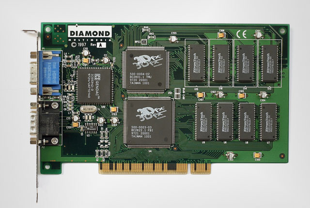
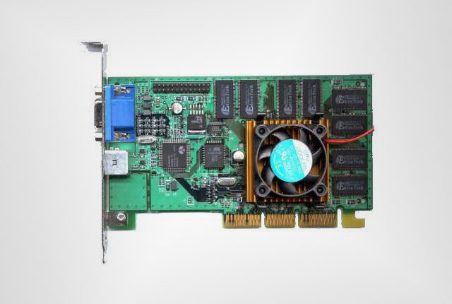
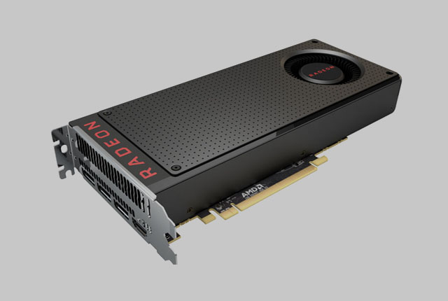
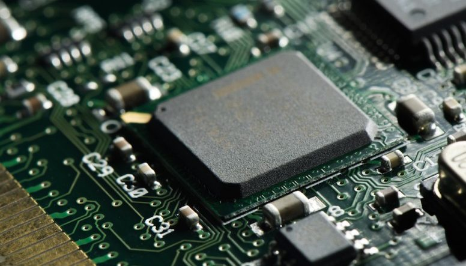
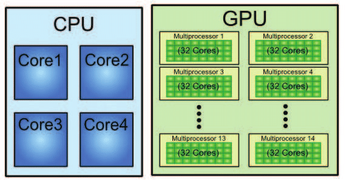
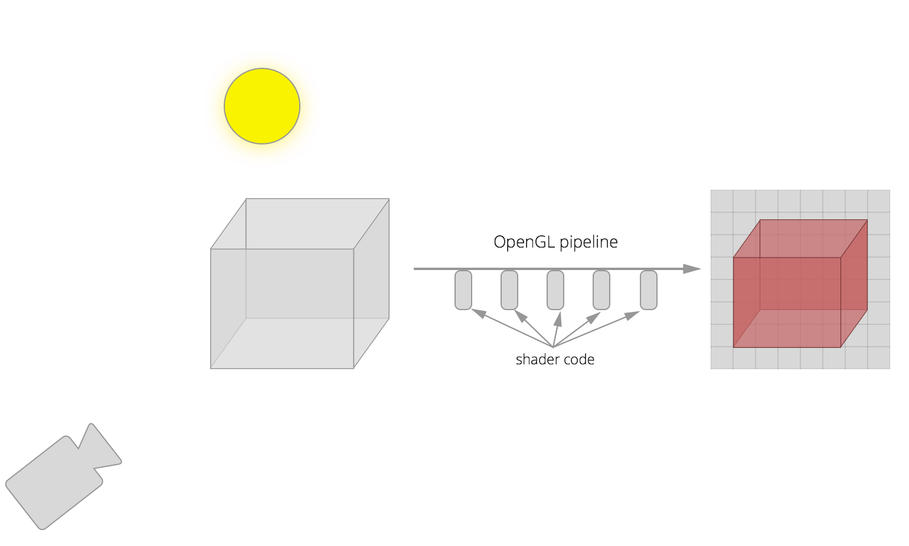

Introducción a shaders
Rodrigo Torres @ Hangar 2019
Tarjeta gráficas
O de cómo llegamos a dibujar con el GPU (Graphics Processing Unit)
3dfx Interactive Voodoo 1, 1996
- Primera con precios accesibles a gamers
- API, controladores y lenguaje propios. Glide API
Nvidia 256, 1999
- Al igual que Matrox y ATI tenía menor precio.
- Compatible con DirectX y OpenGL.
Tarjetas modernas
- Cómputo genérico con OpenCL y Cuda.
- DirectX, OpenGL, Vulkan, etc.
Gráficos integrados
- Ubicuidad: móviles, Raspberry Pi.
- OpenGL ES. Versión utilizada por WebGL en navegadores.
GPU vs GPU
- GPU tiene más nodos de preocesamiento más lentos
- Cómputo en paralelo. Misma instrucción por pixel.
Pipeline OpenGL, estapas de dibujo.
- Convertir de un espacion 3D a la pantalla
- Calcular posiciónde Cámara, objectos y luces.
Pipeline OpenGL, shaders para cada etapa.

- Etapa Vertex Shader. Se calculan las posiciones finales de los vértices.
- Etapa Fragment Shader. Se calcula el color final de cada pixel en pantalla, o buffer.